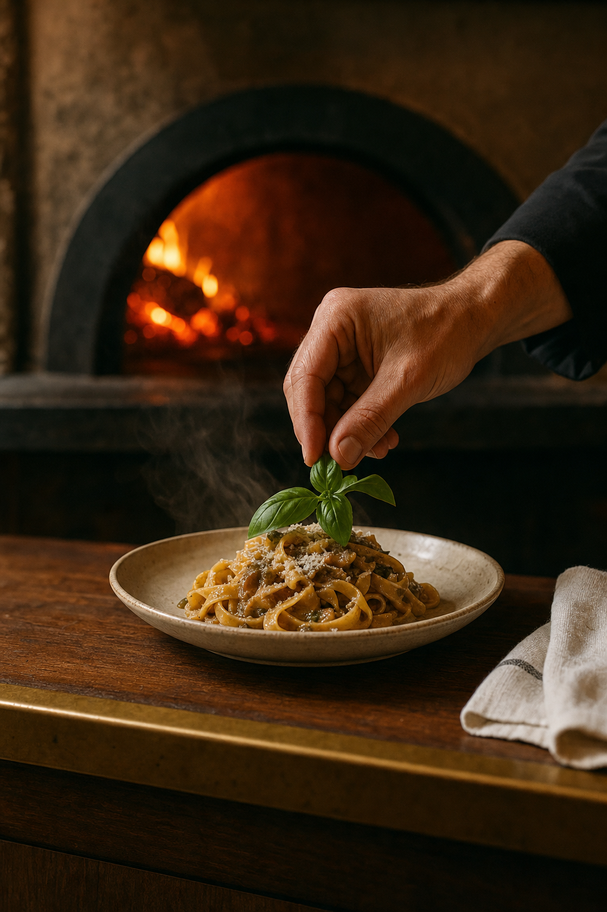
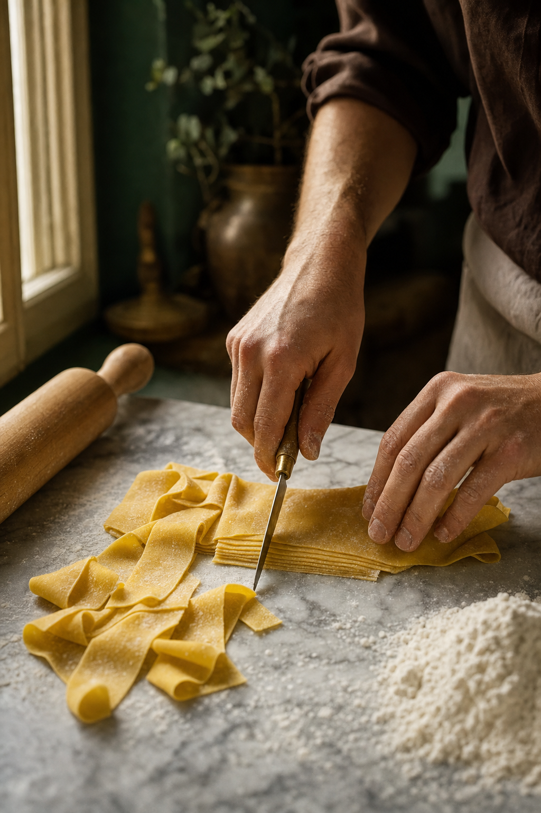

01The read
A room with two lights.
Noti — I'm Nelson Taylor, a creative director and shooter in Dallas–Fort Worth. The City of Grapevine's announcement is how I found Little Dutch, and Community Impact's piece filled in the picture. Congratulations on the opening.
Both describe the same room: a glass atrium with crystal chandeliers and a green glass bar, and a private dining room set apart from the main dining room. Your careers page adds what happens in the kitchen: live-fire charcoal ovens, and pasta and pizza made by hand. It also puts the house in one sentence:
“We are a guest-first hospitality team focused on modern Italian food.”Little Dutch, careers page
So the room has two lights. By day it's the glass, with sun coming through the atrium and across the tables. By night it's fire: charcoal in the ovens, then the chandeliers. People meet a new room on their phones first, and one day of filming can give Little Dutch a season of motion, from the first sun on the glass to the last chandelier.

02The idea
Light, then fire.
One format to carry the quarter. Every reel opens on the same locked-off frame: morning sun crossing a set table under the atrium glass, the chandeliers still dark overhead.
Then the cut moves to hands for a few seconds: dough folded and cut on the counter, linen laid, a plate finished at the pass, charcoal glowing in the ovens. It ends on the room at dusk with the chandeliers up, and one line of copy on screen.
Same opener, a different hour of the day each time. The glass gives every reel the same first light, the fire gives it the same last one, and no one has to step in front of the lens.

03What we'd shoot
One day, sun to chandeliers.
One day at Little Dutch, on whichever day suits the kitchen; a quiet morning before service gives us the room to ourselves. Hands, food and the room only. Every hand on camera belongs to someone on your team who has said yes, and guests stay off camera.
-
Slab 1 · first light Creative direction — treatment frames, not final footage.First light
Sun through the atrium glass across set tables, chandeliers dark. Locked off on the FX6, then the same frame at dusk with everything lit: the opener and the end card for every reel.
-
Slab 2 · the linen Creative direction — treatment frames, not final footage.The linen
White linen folded and laid, cutlery set, plates placed by hand. Quiet, close and slow.
-
Slab 3 · the dough Creative direction — treatment frames, not final footage.The dough
Pasta rolled, folded and cut by hand, flour hanging in the side light. Macro stills on the A7RV, slow motion on the FX6.
-
Slab 4 · the fire Creative direction — treatment frames, not final footage.The fire
The live-fire ovens coming up to heat: embers, flame and glow. A slow push in on the fire itself.
-
Slab 5 · the pass Creative direction — treatment frames, not final footage.The pass
A plate finished at the pass by hand, the ovens glowing out of focus behind it. One plate, one hand, one breath of steam.
-
Slab 6 · set and waiting Creative direction — treatment frames, not final footage.The private room
The private dining room set and empty in the afternoon, ready for a group. A slow pan for the reels, wide stills for the site.
Alongside the reels, the A7RV builds a stills bank from the same day and the same light: the room, the plates and the details, ready for the grid, the site and the private dining page.
04The day
What the day includes.
Short and plain.
- 01One shoot day at Little DutchDirected and shot by me, in your room on Main Street.
- 02Sony FX6 + Sony A7RVCinema motion on the FX6; stills and hybrid on the A7RV.
- 03Vertical firstEvery deliverable is cut 9:16 for Reels, TikTok and Shorts.
- 04Edited vertical videos and a stills bankFrom the same day, built to run for a quarter.
- 05Two rounds of editsAbout two weeks from the shoot to delivery.
Everything else is a conversation for a call.
05Behind the camera
The person behind the lens.
I'm Nelson Taylor. Taylormade Creative is my studio in Dallas–Fort Worth, with fourteen years of design and creative direction behind it. These days most of my work is brand content that I direct, shoot on the FX6 and the A7RV, and cut myself.
Client work over the years includes Lava Cantina and KFC, and my recent content work includes TONI&GUY Academy.
I came to film through design, so I compose for colour, light and material before anything else. A room of glass, chandeliers and open fire is exactly the kind of place that suits that way of working.
- 14 yearsdesign and creative direction
- FX6 · A7RVcinema motion and stills
- 9:16cut for the phone first
- One personfrom shoot to edit
06Whenever it suits
At the kitchen's pace. For a slow afternoon between services.
If Light, then fire feels like Little Dutch, I'd be glad to talk the day through on a short call: the opener, the six shots, and whatever I've missed about the room.
And if the timing isn't right, “not yet” is an easy answer. The concept will keep.
Email NelsonFounder & Creative Director · Taylormade Creative
(817) 707-1291 · taylormademd@gmail.com
www.taylormadecreative.net · @taylormade_creative